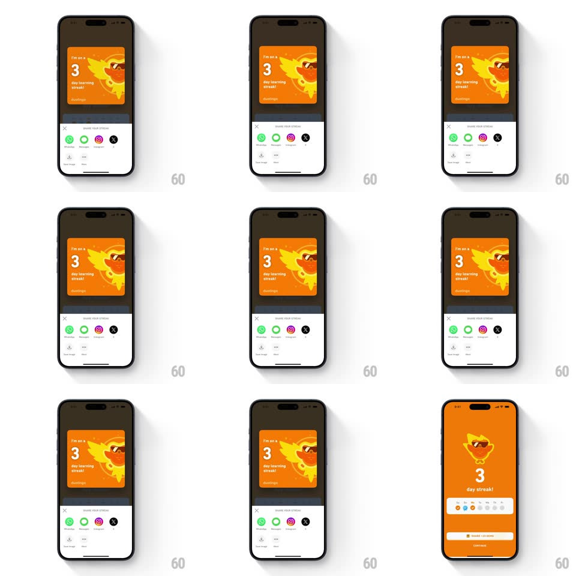

Media
Frame-by-frame

Rebuild this interaction 1:1: Duolingo's streak share flow - from the orange 3-day-streak screen, a bottom sheet springs up titled "SHARE YOUR STREAK" with app targets (WhatsApp, Messages, Instagram, X) and a Download/More row, while the streak card (phoenix Duo over "I'm on a 3 day learning streak!") previews above the sheet; dismissing slides it back down.

Rebuild this interaction 1:1: Duolingo's streak share flow - from the orange 3-day-streak screen, a bottom sheet springs up titled "SHARE YOUR STREAK" with app targets (WhatsApp, Messages, Instagram, X) and a Download/More row, while the streak card (phoenix Duo over "I'm on a 3 day learning streak!") previews above the sheet; dismissing slides it back down. ## Integration Integration: stack-agnostic spec - springs given as stiffness/damping, timed motions as duration + curve; map every value to your framework and animation library of choice. ## Scene Orange streak screen (phoenix Duo, big "3", "day streak!", week strip, share button). The share sheet: streak card preview pinned above it, "SHARE YOUR STREAK" title with X, a row of circular share-target icons, and a Download / More row. ## Motion spec Pattern: spring bottom sheet with pinned preview card. - The sheet rises from the bottom (spring ~380/26, 380ms) over a dimmed streak screen (opacity 0.5). - The streak card preview sits above the sheet's top edge and rises with it, slightly leading (2-frame head start) so it reads as attached. - Sheet content staggers in: title row, then share icons (60ms apart, 12px rise + fade), then the Download/More row. - Dismiss (X, swipe down, or tap the dim): the sheet slides down (spring ~380/28) and the screen undims, returning to the streak screen. ## Calibration - The preview card keeps the orange streak design inside a white rounded frame - a snapshot of what gets shared. - The dim is heavy enough that the sheet owns focus, but the orange still reads through. ## Reduced motion Sheet fades in at final position (250ms); no content stagger. ## Don't miss - The preview card travels with the sheet - it is part of the sheet's geometry, not the background. - Share targets are real app glyphs in circles, not generic icons.